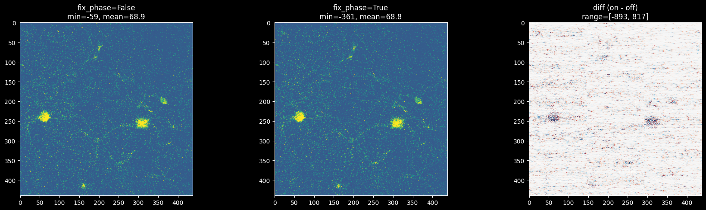

SNR verification#
dataset: 32622_1_00002_00001.tif
per-zplane min subtraction
import numpy as np
import mbo_utilities as mbo
import matplotlib.pyplot as plt
# load exactly as the GUI does: phase correction off
arr = mbo.imread(r"E:\yao\stanford\32622_1_00002_00001\32622_1_00002_00001.tif")
arr.fix_phase = False
print(f"type: {type(arr).__name__}")
print(f"shape: {arr.shape}")
print(f"dims: {arr.dims}")
print(f"dtype: {arr.dtype}")
print(f"fix_phase: {arr.fix_phase}")
type: LBMArray
shape: (2000, 28, 440, 438)
dims: ('timepoints', 'z-planes', 'Y', 'X')
dtype: int16
fix_phase: False
# figure out slice iteration (same as GUI)
dims_lower = tuple(d.lower() for d in arr.dims)
has_c = any(d in dims_lower for d in ("channels", "channel", "c"))
n_slices = arr.shape[1]
label = "channel" if has_c else "z-plane"
print(f"iterating over {n_slices} {label}s")
iterating over 28 z-planes
# compare fix_phase off vs on — show stack.min() to understand the mean difference
path = r"E:\yao\stanford\32622_1_00002_00001\32622_1_00002_00001.tif"
arr_off = mbo.imread(path)
arr_off.fix_phase = False
arr_on = mbo.imread(path)
arr_on.fix_phase = True
n_z = arr_off.shape[1]
print(f"{'zplane':>6} | {'fix_phase=False':^36} | {'fix_phase=True':^36}")
print(f"{'':>6} | {'smin':>6} {'mean':>8} {'std':>8} {'snr':>8} | {'smin':>6} {'mean':>8} {'std':>8} {'snr':>8}")
print("-" * 84)
for s in range(n_z):
stack_off = np.median(np.asarray(arr_off[::10, s]).astype(np.float32), axis=0)
smin_off = float(stack_off.min())
stack_off -= smin_off
mean_off = np.mean(stack_off, axis=0)
std_off = np.std(stack_off, axis=0)
snr_off = np.zeros_like(mean_off)
np.divide(mean_off, std_off + 1e-5, out=snr_off, where=(std_off > 1e-5))
stack_on = np.median(np.asarray(arr_on[::10, s]).astype(np.float32), axis=0)
smin_on = float(stack_on.min())
stack_on -= smin_on
mean_on = np.mean(stack_on, axis=0)
std_on = np.std(stack_on, axis=0)
snr_on = np.zeros_like(mean_on)
np.divide(mean_on, std_on + 1e-5, out=snr_on, where=(std_on > 1e-5))
print(f"{s+1:>6d} | {smin_off:>6.0f} {np.mean(mean_off):>8.2f} {np.mean(std_off):>8.2f} {np.mean(snr_off):>8.2f} | "
f"{smin_on:>6.0f} {np.mean(mean_on):>8.2f} {np.mean(std_on):>8.2f} {np.mean(snr_on):>8.2f}")
zplane | fix_phase=False | fix_phase=True
| smin mean std snr | smin mean std snr
------------------------------------------------------------------------------------
1 | 0 21.96 29.76 7.00 | -5 27.88 31.35 3.79
2 | 0 25.90 44.53 8.28 | 0 25.65 44.55 7.79
3 | 0 21.04 21.19 6.91 | 0 22.44 24.16 2.79
4 | -13 30.00 9.72 14.85 | -14 31.27 11.58 6.20
5 | 0 17.25 10.54 9.03 | -1 19.22 13.20 3.49
6 | 0 16.06 12.95 8.27 | 0 16.34 13.82 4.61
7 | 0 23.03 33.34 8.75 | 0 22.78 33.37 8.30
8 | 0 18.89 13.15 9.25 | 0 19.95 15.92 3.32
9 | 0 18.91 17.95 7.52 | -28 47.84 20.45 7.04
10 | 0 18.94 19.06 8.42 | 0 19.35 20.08 4.05
11 | 0 16.80 10.72 8.37 | -6 24.04 13.21 3.69
12 | 0 16.52 7.86 10.44 | -8 24.64 10.05 5.10
13 | 0 18.49 8.64 10.66 | -22 40.77 9.64 10.40
14 | 0 16.88 9.57 10.52 | -17 34.30 10.99 8.57
15 | 0 18.08 14.44 3.93 | 0 17.85 14.45 3.82
16 | -10 30.04 29.27 6.29 | -10 31.03 31.23 2.74
17 | -3 21.94 15.19 4.82 | -4 25.05 18.19 2.19
18 | 0 19.68 8.54 9.32 | 0 20.40 11.26 3.07
19 | 0 19.09 7.24 12.57 | 0 19.10 7.51 9.29
20 | 0 19.82 7.15 13.95 | 0 19.68 7.33 11.14
21 | -3 21.24 7.58 15.81 | -2 19.99 7.62 13.96
22 | 0 17.36 6.93 13.34 | -0 17.71 7.06 11.30
23 | -4 21.39 6.15 18.12 | -4 20.22 6.35 13.12
24 | -2 19.39 6.07 16.42 | -2 19.18 6.24 13.26
25 | -0 17.53 6.08 15.48 | 0 16.81 6.25 11.80
26 | 0 15.96 6.08 14.63 | -0 16.28 6.39 10.41
27 | 0 16.37 6.13 15.09 | -8 24.70 6.50 15.19
28 | 0 16.92 6.06 15.24 | -5 21.76 6.48 12.89
# single frame comparison: zplane 0, fix_phase off vs on
frame_off = np.asarray(arr_off[0, 0]).astype(np.float32)
frame_on = np.asarray(arr_on[0, 0]).astype(np.float32)
print(f"fix_phase=False: min={frame_off.min():.0f}, max={frame_off.max():.0f}, mean={frame_off.mean():.1f}")
print(f"fix_phase=True: min={frame_on.min():.0f}, max={frame_on.max():.0f}, mean={frame_on.mean():.1f}")
vmin = min(frame_off.min(), frame_on.min())
vmax = max(np.percentile(frame_off, 99.5), np.percentile(frame_on, 99.5))
fig, axes = plt.subplots(1, 3, figsize=(18, 5))
axes[0].imshow(frame_off, cmap='viridis', vmin=vmin, vmax=vmax)
axes[0].set_title(f'fix_phase=False\nmin={frame_off.min():.0f}, mean={frame_off.mean():.1f}')
axes[1].imshow(frame_on, cmap='viridis', vmin=vmin, vmax=vmax)
axes[1].set_title(f'fix_phase=True\nmin={frame_on.min():.0f}, mean={frame_on.mean():.1f}')
diff = frame_on - frame_off
axes[2].imshow(diff, cmap='RdBu_r', vmin=-200, vmax=200)
axes[2].set_title(f'diff (on - off)\nrange=[{diff.min():.0f}, {diff.max():.0f}]')
plt.tight_layout()
plt.show()
fix_phase=False: min=-59, max=5335, mean=68.9
fix_phase=True: min=-361, max=5266, mean=68.8

# AAPM standard: SNR = (mean_signal - mean_background) / std_background
# use fixed percentile on mean image to split foreground/background
# top 20% brightest pixels = signal region, bottom 50% = background region
n_z = arr_off.shape[1]
print(f"{'zplane':>6} | {'fix_phase=False':^36} | {'fix_phase=True':^36}")
print(f"{'':>6} | {'fg_mean':>8} {'bg_mean':>8} {'bg_std':>8} {'snr':>6} | {'fg_mean':>8} {'bg_mean':>8} {'bg_std':>8} {'snr':>6}")
print("-" * 88)
for s in range(n_z):
# phase off
stack_off = np.asarray(arr_off[::10, s]).astype(np.float32)
mean_off = np.mean(stack_off, axis=0)
p80_off = np.percentile(mean_off, 80)
p50_off = np.percentile(mean_off, 50)
fg_off = mean_off >= p80_off
bg_off = mean_off <= p50_off
fg_mean_off = mean_off[fg_off].mean()
bg_mean_off = mean_off[bg_off].mean()
bg_std_off = mean_off[bg_off].std()
snr_off = (fg_mean_off - bg_mean_off) / bg_std_off if bg_std_off > 0 else 0
# phase on
stack_on = np.asarray(arr_on[::10, s]).astype(np.float32)
mean_on = np.mean(stack_on, axis=0)
p80_on = np.percentile(mean_on, 80)
p50_on = np.percentile(mean_on, 50)
fg_on = mean_on >= p80_on
bg_on = mean_on <= p50_on
fg_mean_on = mean_on[fg_on].mean()
bg_mean_on = mean_on[bg_on].mean()
bg_std_on = mean_on[bg_on].std()
snr_on = (fg_mean_on - bg_mean_on) / bg_std_on if bg_std_on > 0 else 0
print(f"{s+1:>6d} | {fg_mean_off:>8.2f} {bg_mean_off:>8.2f} {bg_std_off:>8.2f} {snr_off:>6.2f} | "
f"{fg_mean_on:>8.2f} {bg_mean_on:>8.2f} {bg_std_on:>8.2f} {snr_on:>6.2f}")
zplane | fix_phase=False | fix_phase=True
| fg_mean bg_mean bg_std snr | fg_mean bg_mean bg_std snr
----------------------------------------------------------------------------------------
1 | 91.88 28.09 4.25 14.99 | 91.73 27.91 4.28 14.93
2 | 106.51 26.82 3.76 21.21 | 106.26 26.58 3.76 21.22
3 | 79.58 28.17 3.94 13.06 | 79.39 28.01 4.05 12.69
4 | 56.18 24.23 3.41 9.37 | 55.98 24.05 3.53 9.04
5 | 64.43 24.85 3.54 11.18 | 64.26 24.66 3.69 10.72
6 | 59.25 20.74 2.94 13.11 | 59.07 20.54 3.02 12.76
7 | 91.17 24.55 3.45 19.30 | 90.90 24.30 3.45 19.30
8 | 74.10 24.89 3.57 13.79 | 74.06 24.58 4.00 12.37
9 | 73.80 23.34 3.31 15.24 | 73.88 22.96 3.91 13.02
10 | 72.82 23.05 3.17 15.71 | 72.79 22.73 3.51 14.27
11 | 64.87 22.65 3.25 13.01 | 65.20 22.15 4.21 10.21
12 | 61.70 22.70 3.25 12.01 | 62.19 22.10 4.53 8.85
13 | 63.04 24.07 3.10 12.55 | 63.27 23.58 3.89 10.19
14 | 68.54 22.57 3.26 14.11 | 68.83 22.06 4.19 11.16
15 | 88.83 28.84 4.84 12.39 | 88.58 28.60 4.84 12.40
16 | 97.41 26.56 4.18 16.96 | 97.27 26.38 4.22 16.79
17 | 77.45 27.33 3.90 12.84 | 77.31 27.14 4.07 12.31
18 | 65.20 26.60 3.43 11.24 | 65.06 26.36 3.63 10.66
19 | 39.07 23.47 2.48 6.28 | 38.98 23.18 2.73 5.79
20 | 37.74 22.56 2.17 6.98 | 37.76 22.20 2.53 6.14
21 | 36.91 20.48 2.00 8.21 | 36.68 20.23 2.00 8.22
22 | 35.59 19.78 1.99 7.94 | 35.63 19.41 2.34 6.93
23 | 33.48 18.72 1.79 8.26 | 33.92 18.15 2.77 5.70
24 | 33.97 18.64 1.79 8.57 | 34.16 18.18 2.37 6.74
25 | 33.98 18.71 1.75 8.73 | 34.32 18.20 2.52 6.38
26 | 33.42 17.62 1.72 9.21 | 34.53 16.77 3.72 4.77
27 | 34.49 18.03 1.73 9.54 | 35.85 17.06 4.10 4.59
28 | 35.81 18.55 1.75 9.88 | 37.41 17.48 4.53 4.40